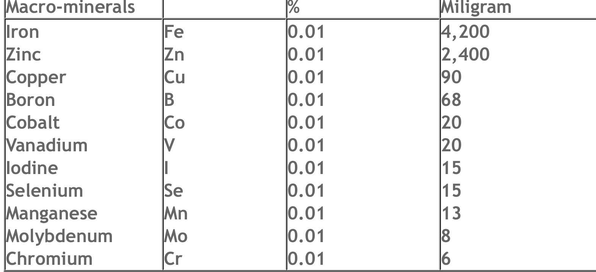

In the Quran, Allah reveals that the creation of man is a miracle. The first human being was created by Allah shaping clay into a human form and
then breathing a soul into it, Allah (SWT) says in Quran :
( إذ قال ربك للملائكة إني خالق بشرا من طينٍ ، فإذا سويته ونفخت فيه من روحي فقعوا له ساجدين ) سورة (ص) 71-72
( Your Lord said to the angels, "I am going to create a human being out of clay. When I have formed him and breathed My Spirit into him, fall down
in prostration to him!") (Quran 38:71-72)
and also says :
( فاستفتهم أهم أشد خلقاً أم من خلقنا إنا خلقناهم من طين لازب) الصافات 11
" Then inquire of them: Is it they who are stronger in structure or other things We have created? We created them from sticky clay " (Quran 37:11)
When the human body is examined today, many elements present on the earth are also discovered to be found in the human body. Living tissues contain
95% carbon, hydrogen, oxygen, nitrogen, phosphorus and sulphur, with a total of 26 different elements.
In another verse of the Quran we are told:
(ولقد خلقنا الإنسان من سلالة من طين ) المؤمنون 12
"We created man from an extract of clay" (Quran 23:12)
The Arabic word "sulala," translated as "extract" in the verse, means "representative example, essence." As we have seen, the information revealed
in the Quran 1,400 years ago confirms what modern science tells us-the fact that the same elements as those found in the soil are employed in the human creation .
Scientific implications of the Holy ayah:
First: the chemical structure of the human body confirms the relation between man and clay. The human body consists mainly of water (54% to 70% or
more) in addition to protein (11% to 17%), fat (14% to 26%), and other several substances and inorganic components (5% to 6%). According to the chemical
analysis of the basic substances of the human body, we can see that it is composed of the following elements:
· Oxygen 65%.
· Carbon 18%.
· Hydrogen 10%.
· Nitrogen 3%.
· Calcium 1.4%.
· Phosphorous 7%.
In addition, there are some less abundant substances like iodine, fluorine, bromine, iron, copper, magnesium, zinc, chrome, cobalt, nickel,
molybdenum, tin, vanadium, silicon, and aluminum. However, despite their rarity, the shortage of any of these substances may cause an imbalance
in the functions of the human body.
The components of the human body correspond in general with the chemical composition of soil when combined with water, i.e. clay. Generally,
soil is made of a number of clay minerals that depend in their structure on hydrated aluminum silica, and exceed ten in number.
They differ according to the degree of hydration, the percentage of both aluminum and silicon, or through the addition of other substances like magnesium, potassium, etc.
Moreover, clay minerals are combined (mixed) with different proportions of sand grains (quartz), feldspars, mica, iron oxides, and some heavy
minerals, in addition to a small percentage of volcanic ashes, sea lime (calcareous) and salt particles, and ash particles that result from various combustive operations.
Soil is also mixed with pollen and other plant remnants, bacteria and the remnants of other microorganisms, some remnants of cosmic and meteoritic dust,
in addition to several other organic substances from the waste of various living creatures. This combination makes the chemical composition of soil and water very similar to
that of the human body.
Soil is fragmented fine-grained sediment. Its granular diameter (clay) does not exceed 1/257 of a millimeter, even if mixed with some granules of
silt (the diameter of its granule is 1/16 mm, 1/256 mm) and sand (1/4 – 1/16 mm.)
The proportion of porosity is as high as 70% to 80% in recently formed clay sediments. On the other hand, this proportion decreases to only
13% in old clay (mudstone) rocks, especially in shale. This high proportion of porosity in newly formed clay sediments increases after denudation (weathering) and transformation into soil.
Soil pores fill with different ions of other substances, in addition to water, air and micro – wastes of living creatures. If the proportion of water increases, clay transforms into mud.
The extraction from which man was created is the substances and compounds dissolving in the water held between the grains of clay metals and cracks that form clay.
Second: Man depends on plants as his main food resource and this confirms the link between humans and clay: The roots of plants absorb the substances and compounds dissolved in the water,
which is stored between soil particles. Plants grow and produce different crops that man and several animals (herbivores) eat. Even creatures that eat both meat and plants (like humans),
or those that eat meat only (carnivores), live, thrive, and grow depending on this blend absorbed by plants from the space between clay particles, and which turn into clay,
and then into mud by watering.
That is why Allah (SWT) created plants before animals and humans, because plants are the only means to transform ground substances into food chains,
which are necessary for human and animal survival.
Indeed, Allah says the truth in His wisely revealed Book more than fourteen centuries ago; He says what can be translated as:
"And indeed We created man (Adam) out of an extract of clay" (Surat Al-Mu'minun (The Believers): 12).
"Who made everything He has created good, and He began the creation of man from clay" (Surat As-Sajdah (The Prostration): 7).
"And Allah has brought you forth from the (dust of) earth. Afterwards He will return you into it (the earth), and bring you forth" (again on the Day of Resurrection)?(Surat Nuh: 17, 18).
Also His words said by His slave and Messenger Saleh (AS) when he spoke to his people:* "O my people! Worship Allah: you have no other Ilah (God) but Him.
He brought you forth from the earth and settled you therein"* (Surat Hud: 61)
Third: After death, human bodies start to decompose and transform into clay extracts before they merge with the soil. The relation between the human body and soil with its water content (mud)
reasserts by the huge correspondence between their chemical structures. The growth of the human body (from the embryonic stage up to maturity) depends
on some ground substances and their dissolved compounds.
These substances are stored between the clay particles that form the earth’s soil, which plants transform (by the Mighty power of Allah) into fruits and crops edible for man.
They can also be transformed into grass,
which is eaten by animals, making food for man. This marvelous food chain, in which plants play an enormous role, originally came out of this clay extract that
consists of many substances and compounds absorbed by plant roots.

As we notice above water forms the main component of the human being and any other being. Allah (SWT) says :
( والله خلق كل دابة من ماء فمنهم من يمشي على بطنه ومنهم من يمشي على رجلين ومنهم من يمشي على أربع يخلق الله ما يشاء إن الله على كل شيء قدير) النور 45
" Allah created every [living] creature from water. Some of them go on their bellies, some of them on two legs, and some on four. Allah creates whatever He wills. Allah has power over all things"
(Quran, 24:45)
(وجعلنا من الماء كل شيء حي أفلا يؤمنون َ) الأنبياء 30
" and We made from water every living thing? So will they not believe?" (Quran, 21:30)
(وهو الذي خلق من الماء بشراً فجعله نسباً وصهراً وكان ربك قديراً ) الفرقان 54
"And it is He Who created human beings from water and then gave them relations by blood and marriage. Your Lord is All-Powerful" (25:54)
When we look at the verses concerned with the creation of human beings and living things, we clearly see evidence of a miracle. One such miracle is of the creation of living things from water.
It was only possible for people to come across that information, clearly expressed in those verses, hundreds of years afterwards with the invention of the microscope.
All life forms need water in order to survive. Animals in dry regions, therefore, have been created with mechanisms to protect their metabolisms
from water loss and to ensure maximum benefit from water use.
If water loss takes place in the body for any reason, and if that loss is not replaced, death will result in a few days.
The famous 17th century scientist Jan Baptista van Helmont discovered in 1640s that water in the soil was the most important element of plant development.
http://www.quranandscience.com/human/262-the-origin-of-creation--clay-a-water-.html
While Muslims are not evolutionists scientists currently propose clay as the origin of life
http://www.sciencedaily.com/releases/2013/11/131105132027.htmhttp://www.sciencedaily.com/releases/2013/11/131105132027.htm
So when the Quran 1400 years ago it’s incorrect
But what about your scientists?
Not Muslims or anything
DOWNLOAD CLAY PDF